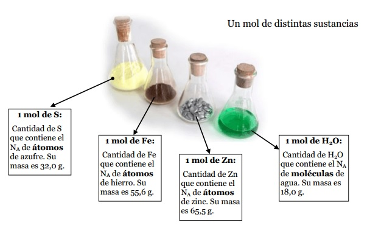

CANTIDADES QUIMICAS
¿QUE ES?
Todas las muestras de sustancias tienen propiedades comunes que son medibles que
constituyen magnitudes físicas. Estas muestras de sustancias tienen la propiedad de ser atraídas por el campo
gravitatorio de la tierra y de ofrecer determinada resistencia a modificar su estado de reposo o movimiento.
Esto se define como la magnitud física masa, cuyo símbolo es m y cuya unidad es el kilogramo en el Sistema
Internacional de Unidades (SI). Una magnitud que muchas veces usamos en Química es la cantidad química, cuyo
símbolo es n y su unidad es el mol en el SI. El mol se define de la siguiente forma: “el mol, símbolo mol,
es la unidad SI de cantidad de sustancia de una entidad elemental, la cual puede ser un átomo, molécula,
ion, electrón, o cualquier otra partícula o un grupo específico de tales partículas; su magnitud se
establece mediante la fijación del valor numérico de la constante NA de Avogadro que es 6,02214076 × 1023,
cuando es expresado en la unidad SI mol-1.” valor establecido hasta el momento. La expresión
“entidades elementales” refiere a átomos, moléculas, iones, electrones u otras partículas con dimensiones
del orden ultramicroscópico. El número de átomos que hay en 12 g de carbono puro es 6,02 x 1023. Este número
se conoce como Constante de Avogadro, en honor al científico italiano Amadeo Avogadro. Este número es muy
grande pues corresponde a 602.000 trillones.

CURIOSIDADES:
La cantidad química o cantidad de sustancia es "una magnitud macroscópica que permite
determinar indirecta y aproximadamente la cantidad de entidades elementales que hay
en un sistema dado."
La unidad de dicha magnitud se denomina mol: "un mol es la cantidad química que hay
en un sistema que contiene tantas entidades elementales como átomos hay en un sistema
formado por 0,012Kg de 12C." En dicho sistema hay 6,02 x 1023 átomos de carbono, por
lo que, cualquier sistema que contenga dicho número de partículas, independientemente
de qué sustancia se trate, contiene un mol de dicha sustancia. Este número, se denomina
constante de Avogadro: NA = 6,02 x 1023 partículas/mol.